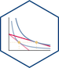

Teaching
Current Courses (Fall 2022)
|  | ECON 306 - Microeconomic Analysis |
| ECON 452 - History of Economic Thought | |
| ECON 480 - Econometrics |
All Courses Taught
Hood College (Fall 2016–Present)
Course titles below link to latest version of course website (including courses in progress). Many courses may have prior website versions with full materials but are either password protected or answer keys are hidden. If you are interested in the materials (and are not a current student), I am happy to share them with you (just email me)!

Wake Forest University (Fall 2015–Spring 2016)
| ECN 150 - Introduction to Economics |
| ECN 272 - Austrian Economics |
George Mason University (Summer 2013–Summer 2015)
| ECON 385 - International Economic Policy |
| ECON 403 - Austrian Economics |
| ICES High School Summer Workshops |